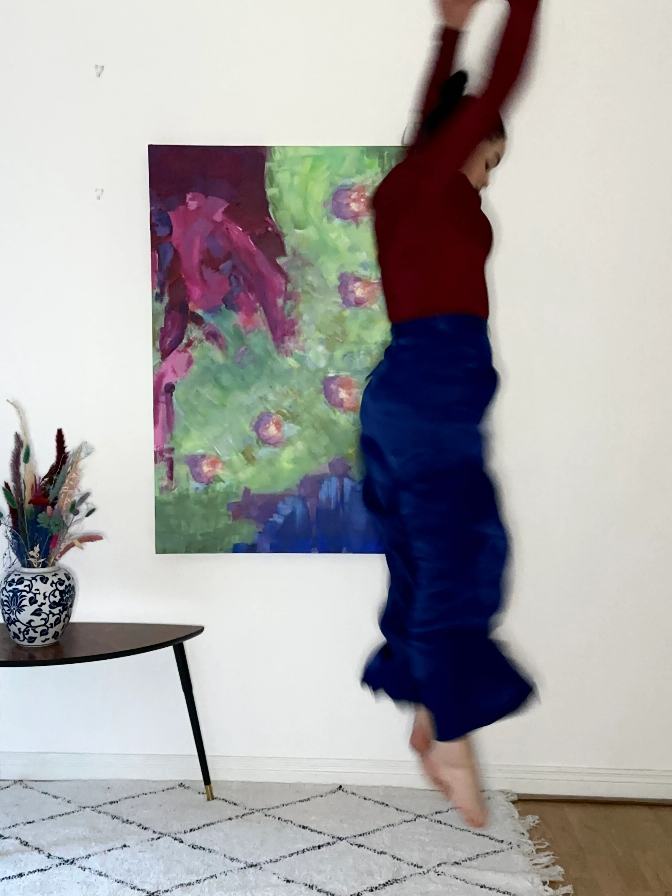

Irish artist working across painting and embroidery. Drawn to words, women and a good bit of woo. The abstract work exists to give people space to see what they want, at a time when we are being pushed quite hard to see in one way only.
A mixture of silk and cotton threads on Belfast linen and pure cotton linen. This collection focuses on restraint to allow the imperfect words do all the talking. Available in open editions and limited editions.
View on HUG →
Working in oils on pure cotton linen, the paintings explore identity, the female body, and the spaces women occupy. Exhibited internationally and available as limited edition fine art prints.
View VAI profile →